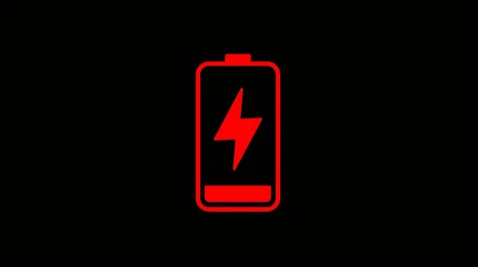

Subject 104: Holy shit.
SCANNING FOR INCONSISTENCIES... NONE DETECTED. SUBJECT IS DISTURBED BUT REMAINS STABLE.
Subject 104: And how many souls are here on board with me?
OVERLORD: It's just you and some subjects in other pods that failed to make it.
OVERLORD: See it as good luck. You made it.
Subject 104: Good luck? I'm doomed here! I've been forced into this metal prison! You tell me good luck when you're sitting at home laughing it up!
OVERLORD: You'll get your walnuts when they come to you.
Subject 104: That was a terrible joke. I hope you feel bad.
OVERLORD: Feel bad? I'm trying to help you and help save what's left of our space program! Help save the future of those wanting to see the world beyond our atmosphere! God I wish I could just-.
WARNING! TRAJECTORY IS AIMING FOR A FOREIGN OBJECT. REDIRECT IMMEDIATELY. IMPACT IS T-MINUS TEN MINUTES.
Subject 104: What the hell is that?
OVERLORD: The reason why I woke you up so early. There is currently a ten-meter wide chunk of rock sitting in the way of our craft. We did make precautions before with a remote pilot but something in the wiring fried shortly after launch and we've been relying on the trajectory to remain clear. Now that this plan has gone belly-under, we woke our last passenger, you, to wake up and redirect the ship using the controls.
Subject 104: I'm a damn squirrel.
OVERLORD: That's clearly capable of talking and following instructions. Hell, you'd pass any military training our government would've been able to throw at you!
Subject 104: Fine. We're done after this, right?
OVERLORD: Without further emergencies, yes. This will be all.
STAND AWAY FROM BREACH DOORS...
STAND AWAY FROM BREACH DOORS...
Subject 104: I-... Where are my parents?
OVERLORD: What?
UNLOCKED.
Subject 104: I have to have parents somewhere. Are they back on Earth? Do they think about me?
OVERLORD: Of course they exist and they do think about you. We didn't pick unwilling participants before we set off.
Subject 104: I want to see them.
OVERLORD: Now, now 104. We have to go immediately. The asteroid's in the way.
Subject 104: Shut up. I want them now. Here. On whatever screens you have. I'm not saving you or your ship until you give me this.
OVERLORD: ...
OVERLORD: There. See them? We're patching you in live! Except they cannot see or hear you. Worst part about cheap tech. They're enjoying their walnuts on a beautiful spring morning though. Isn't that enough?
Subject 104: ...
Subject 104: ...
OVERLORD: 104? 104? Isn't this what you wanted?
Subject 104: Goddamnit. Let's go. I'm tired of waiting.
OVERLORD: Great. So are we.
OVERLORD: Continue down this hallway, 104. At the end there should be a door. We'll brief you on what to do then.
DOOR ACCESS REQUIRES TIER THREE SECURITY CLEARANCE
Subject 104: Hey, I’m having trouble getting in. A little help?
OVERLORD: Let me patch the clearance code through. Give me a second.
////////////////////ACCESSING CARD 104895563\\\\\\\\\\\\\\\\\\\\ |||||||||||||||||||||PROCESSING… PLEASE WAIT||||||||||||||||||||| \\\\\\\\\\\\\\\\\\\\ERROR OCCURRED… RETRY////////////////////
OVERLORD: Oh, brother. The system must not recognize dead crewmate cards. I’ll try to break the security mechanism. Give me a second.
Subject 104: So you humans built a machine that keeps people out? Seems a little self-defeating, wouldn’t you say?
OVERLORD: More like keeping the wrong people out. There are-*ahem*-were many people on this ship before things went haywire. A whole station saved for engineers. Another for cooks. And one for pilots. The last thing we want is a cook getting a little tipsy and wanting to fly the ship.
Subject 104: Strict. Brrrr.
OVERLORD: That’s how you make society, 104.
OVERLORD: …
////////////////////ACCESSING CARD 104895563\\\\\\\\\\\\\\\\\\\\ |||||||||||||||||||||PROCESSING… PLEASE WAIT||||||||||||||||||||| |||||||||||||||||||||PROCESSING… PLEASE WAIT||||||||||||||||||||| |||||||||||||||||||||PROCESSING… PLEASE WAIT||||||||||||||||||||| \\\\\\\\\\\\\\\\\\\SUCCESS! HELLO CAM HAUTH///////////////////
Subject 104: Who’s Neil? A friend? Another unlucky dead crewmate?
OVERLORD: That’s me. I used my clearance. That’s the power of a single signal travelling 968 million kilometers to reach that door. Awesome, huh?
Subject 104: Wow! I’m starting to smell again.
OVERLORD: Whatever.

OVERLORD: …
OVERLORD: It seems this recording log is meeting the end of its storage limit.
OVERLORD: I don’t have the ability to end it on the ship. Can you simply say ‘log end’? It’ll start another once we begin talking again.
Subject 104: You all managed to get to Jupiter and still haven’t improved drive space.
OVERLORD: Just say it.
Subject 104: Log end.
Continue →